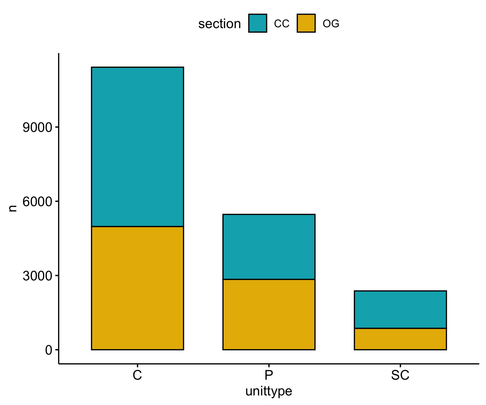
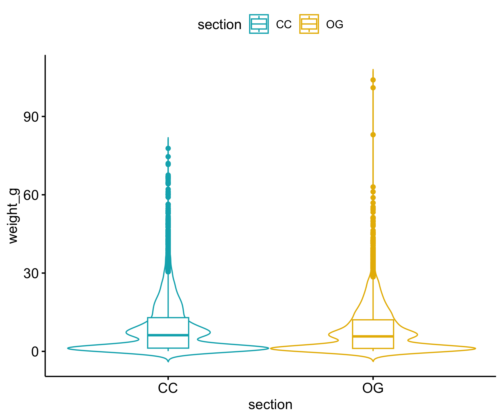
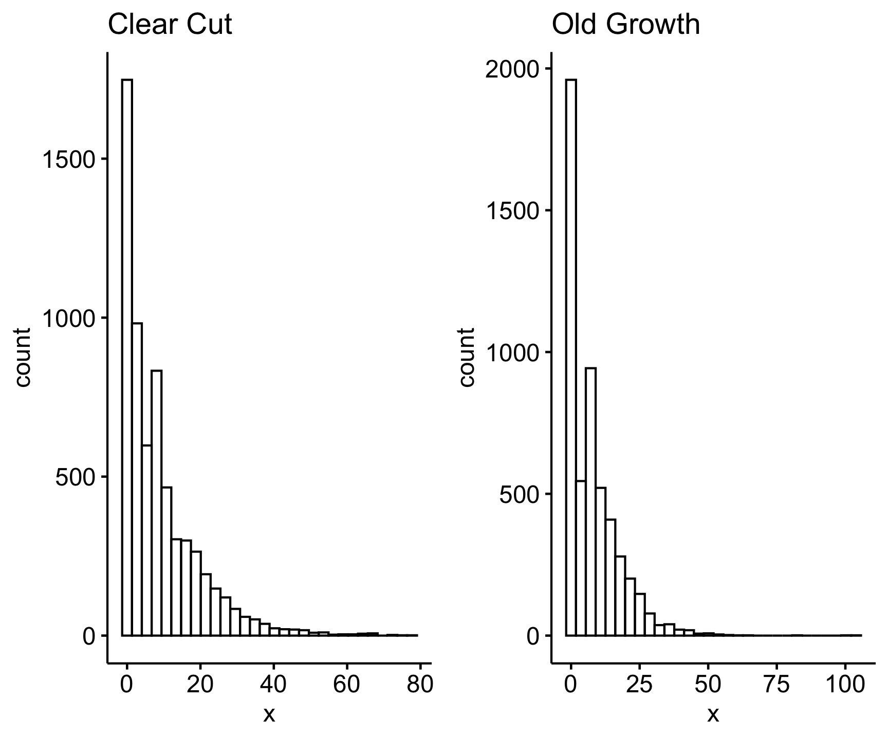
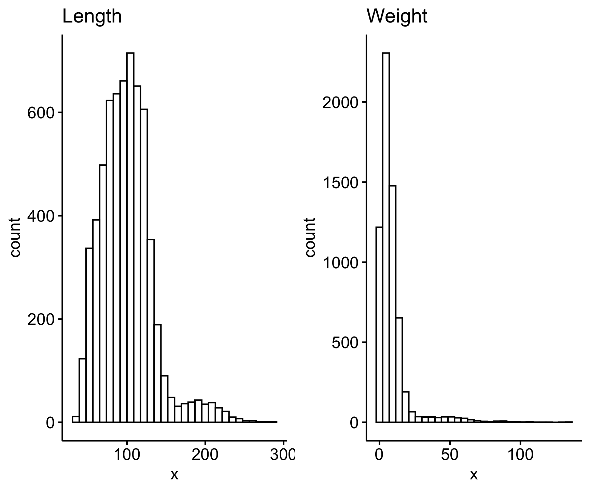
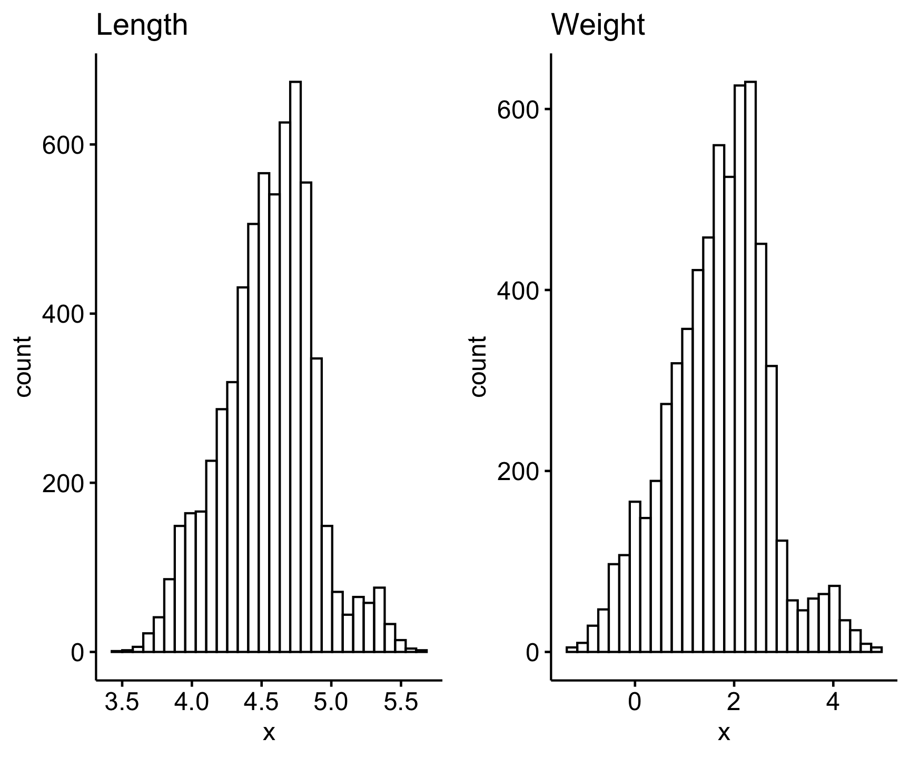
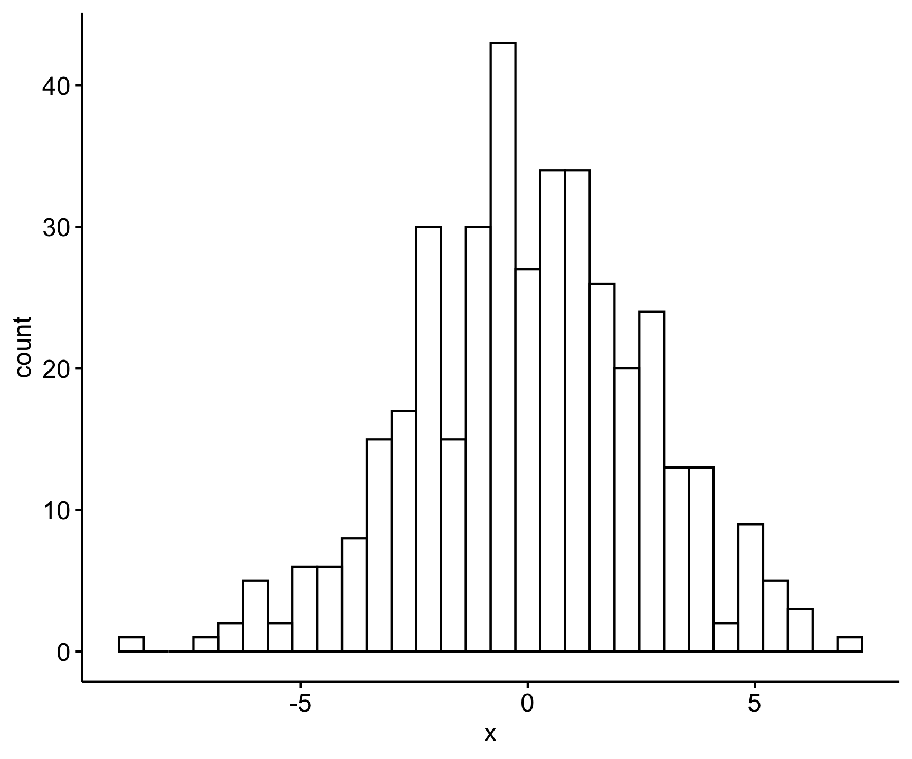

Lab 4: LTER Network Data
Introduction to Statistics in R
Part 1: Univariabte and Bivariate Statistics
In this portion of the lab you will be introduced to the process of conducting statistical tests in R, specifically chi-square, t-tests, and correlation tests. These are commonly used for univariate and bivariate data.
Uni- vs bi- variate data
Univariate data consists of observations on a single variable. It describes one characteristic of a dataset without considering relationships between variables. Examples include:
- The heights of students in a class
- The daily temperature of a city
- The number of books read by individuals in a year
Bivariate data involves observations on two variables and explores the relationship between them. It is used to analyze correlations or dependencies. Examples include:
- The relationship between students’ study time and their exam scores
- The correlation between temperature and ice cream sales
- The effect of age on income level
To learn about this statistical tests, we will use data for cutthroat trout and salamander length and weights collected in Mack Creek, which is in the Andrews Forest Long-Term Ecological Research (LTER) facility in Oregon in the Cascade Mountains. Specifically, these data were collected in different forest treatments: clear cut or old growth.
First, to access the dataset(s) you will be using today install the lterdatasampler package (remotes is needed because lterdatasampler has to be installed from GitHub)
Code
remotes::install_github("lter/lterdatasampler")Now load in the libraries needed for this lab:
Code
library(tidyverse)
library(ggpubr)
library(lterdatasampler)
library(car)Then run the following line of code to retrieve the and_vertebrates data set and bring it into your R session:
Code
?and_vertebratesExplore the dataset
Do a little exploration of this data first to understand its structure, variables and data types:
Code
# View the data structure
glimpse(and_vertebrates)Rows: 32,209
Columns: 16
$ year <dbl> 1987, 1987, 1987, 1987, 1987, 1987, 1987, 1987, 1987, 1987…
$ sitecode <chr> "MACKCC-L", "MACKCC-L", "MACKCC-L", "MACKCC-L", "MACKCC-L"…
$ section <chr> "CC", "CC", "CC", "CC", "CC", "CC", "CC", "CC", "CC", "CC"…
$ reach <chr> "L", "L", "L", "L", "L", "L", "L", "L", "L", "L", "L", "L"…
$ pass <dbl> 1, 1, 1, 1, 1, 1, 1, 1, 1, 1, 1, 1, 1, 1, 1, 1, 1, 1, 1, 1…
$ unitnum <dbl> 1, 1, 1, 1, 1, 1, 1, 1, 1, 1, 1, 1, 1, 1, 1, 1, 2, 2, 2, 2…
$ unittype <chr> "R", "R", "R", "R", "R", "R", "R", "R", "R", "R", "R", "R"…
$ vert_index <dbl> 1, 2, 3, 4, 5, 6, 7, 8, 9, 10, 11, 12, 13, 14, 15, 16, 1, …
$ pitnumber <dbl> NA, NA, NA, NA, NA, NA, NA, NA, NA, NA, NA, NA, NA, NA, NA…
$ species <chr> "Cutthroat trout", "Cutthroat trout", "Cutthroat trout", "…
$ length_1_mm <dbl> 58, 61, 89, 58, 93, 86, 107, 131, 103, 117, 100, 127, 99, …
$ length_2_mm <dbl> NA, NA, NA, NA, NA, NA, NA, NA, NA, NA, NA, NA, NA, NA, NA…
$ weight_g <dbl> 1.75, 1.95, 5.60, 2.15, 6.90, 5.90, 10.50, 20.60, 9.55, 13…
$ clip <chr> "NONE", "NONE", "NONE", "NONE", "NONE", "NONE", "NONE", "N…
$ sampledate <date> 1987-10-07, 1987-10-07, 1987-10-07, 1987-10-07, 1987-10-0…
$ notes <chr> NA, NA, NA, NA, NA, NA, NA, NA, NA, NA, NA, NA, NA, NA, NA…Code
# Explore the metadata in the Help pane
?and_vertebratesThis data set contains length and weight observations for three aquatic species in clear cut and old growth coniferous forest sections of Mack Creek in HJ Andrews Experimental Forest in Oregon. The three species are Cutthroat trout, Coastal giant salamander and Cascade torrent salamander.
Chi-square - Categorical Analysis
When you are working with two categorical variables, the statistical test you use is a Chi-square test. This test helps to identify a relationship between your two categorical variables.
For example, we have two categorical variables in the and_vertebrates data set:
section= two forest sections, clear cut (CC) and old growth (OG)unittype= stream channel unit classification type (C = cascade, I = riffle, IP = isolated pool (not connected to channel), P = pool, R = rapid, S = step (small falls), SC = side channel, NA = not sampled by unit)
Lets focus this question on Cutthroat trout. First explore the abundance of cutthroat trout in different channel types, using the n() function to return the total count/number of observations in each group.
Code
and_vertebrates |>
filter(species == "Cutthroat trout") |>
count(unittype)# A tibble: 8 × 2
unittype n
<chr> <int>
1 C 11419
2 I 23
3 IP 105
4 P 5470
5 R 420
6 S 9
7 SC 2377
8 <NA> 610This output tells us that there are quite a few observations with the NA category, meaning channel type was unknown or not recorded. Let’s edit the workflow above slightly, using two new functions: drop_na() and count(). drop_na() will remove any rows within a specified column (or columns) that have NA values, and we can use count() when we only want the number of observations for a single variable (in this case unittype) as an alternative to group_by() and summarise().
Code
and_vertebrates %>%
filter(species == "Cutthroat trout") %>%
drop_na(unittype) %>%
count(unittype)# A tibble: 7 × 2
unittype n
<chr> <int>
1 C 11419
2 I 23
3 IP 105
4 P 5470
5 R 420
6 S 9
7 SC 2377This returns just about the same data frame as the first method, but now with the NA category removed because it dropped any observations that were NA for unittype.
From this we also observe that the highest Cutthroat trout abundances are found in cascade (C), pool (P), and side channel (SC) habitats.
Now, our question expands beyond this one categorical variable (channel type) and we want to know if abundance is affected by both channel and and forest type (section). Here, our null hypothesis is that forest and channel type are independent. To test this, we use the chisq.test() function to carry out a chi-square test, but first we have to reformat our data into a contingency table.
A contingency table is in matrix format, where each cell is the frequency (in this case seen as abundance) of Cutthroat trout in each combination of categorical variables (forest type and channel unit). We can create a contingency table with the table() function. For this analysis, lets also filter out just the 3 most abundant unit types for Cutthroat trout (C, P and SC).
Code
# First clean the dataset to create the contingency table from
trout_clean <- and_vertebrates |>
#filter Cutthroat trout
filter(species == "Cutthroat trout") |>
# lets test using just the 3 most abundant unittypes
filter(unittype %in% c("C", "P", "SC")) |>
# drop NAs for both unittype and section
drop_na(unittype, section)
cont_table <- table(trout_clean$section, trout_clean$unittype)To execute the Chi-square test does not take that much code, but it is important to note that by default, chisq.test() assumes the null hypothesis is that all frequencies have equal probability. If you have different pre-conceived frequency probabilities for your data you have to define those within the chisq.test() function.
Code
chisq.test(cont_table)
Pearson's Chi-squared test
data: cont_table
X-squared = 188.68, df = 2, p-value < 2.2e-16Looking at these results, we have an extremely small p-value. This tells us that there is a significant relationship between forest type and channel unit (i.e., we rejected our null hypothesis).
Lets look at the abundance distribution visually:
Code
gg1 = trout_clean |>
count(unittype, section) |>
ggpubr::ggbarplot(x = 'unittype', y = 'n',
fill = 'section',
palette = c("#00AFBB", "#E7B800"),
add = "mean_se")
gg2 = trout_clean |>
count(unittype, section) |>
ggplot(aes(x = unittype, y = n))+
geom_col(aes(fill = section))+
scale_fill_manual(values = c("orange", "darkgreen")) +
theme_minimal()
ggarrange(gg1, gg2, ncol = 2)
t-test - Compare two means
Previous work has shown that forest harvesting can impact aquatic vertebrate biomass (Kaylor & Warren 2017). With this and_vertebrates data set we can investigate this hypothesis, by comparing weight to forest type (clear cut or old growth). This therefore involves a test comparing the means (average weight) among two groups (clear cut and old growth forests), which then requires a t-test.
Let’s focus on conducting this test for Cutthroat trout. We can use the same trout_clean data set we made earlier, and let’s also drop all NAs in weight_g. Then, visualize the differences in weight among forest type with a boxplot:
Code
gg1 = trout_clean |>
drop_na(weight_g) |>
ggplot(aes(x = section, y = weight_g)) +
geom_violin() +
geom_boxplot(aes(alpha = .5)) +
theme_bw()
gg2 = trout_clean |>
drop_na(weight_g) |>
ggpubr::ggviolin(x = "section",
y = "weight_g",
add = "boxplot",
color = "section",
palette = c("#00AFBB", "#E7B800"))
ggarrange(gg1, gg2, ncol = 2)
We don’t see too much of a difference based on this visual, but we need to conduct the statistical test to verify if our hypothesis is supported. Before we dive into the statistical test, we should check our test assumptions.
Test Assumptions: A t-test assumes the variance of each group is equal and that the data are normally distributed.
Equal Variance We can test for equal variances with the function var.test(), where the null hypothesis is that the variances are equal. In this step we need two vectors of the weights in each separate forest section. You can use pull() to convert a single column of a data frame/tibble to a vector, and we want to do this for clear cut and old growth forests separately. We then put both of those vectors in the var.test() function to assess their equal variances.
Code
cc_weight <- trout_clean %>%
filter(section == "CC") %>%
pull(weight_g)
og_weight <- trout_clean %>%
filter(section == "OG") %>%
pull(weight_g)
var.test(cc_weight, og_weight)
F test to compare two variances
data: cc_weight and og_weight
F = 1.2889, num df = 6310, denom df = 5225, p-value < 2.2e-16
alternative hypothesis: true ratio of variances is not equal to 1
95 percent confidence interval:
1.223686 1.357398
sample estimates:
ratio of variances
1.288892 The results of this test suggest that the variances are not equal. How do we know this? If you can’t remember, refresh your memory of the null hypothesis for the variance test and how to interpret the p-value.
One option for data with unequal variances is to use the Welch t-test, which does not assume equal variances. We will explore this test later.
Normal Distribution Run the below code to look at the distribution of weight (our continuous variable).
Code
hist(trout_clean$weight_g)
Code
ggarrange(ggqqplot(trout_clean$weight_g),
ggdensity(trout_clean$weight_g),
gghistogram(trout_clean$weight_g), ncol = 3)We can see from the histogram that the data are pretty right skewed. You will learn how to statistically determine whether data are normally distributed in the next section. For now, we will log transform on the data, which works well when data are skewed. You can do this with the function log. Let’s check the variances like we did before using the log transformed values:
Code
var.test(log(cc_weight), log(og_weight))
F test to compare two variances
data: log(cc_weight) and log(og_weight)
F = 1.0208, num df = 6310, denom df = 5225, p-value = 0.4374
alternative hypothesis: true ratio of variances is not equal to 1
95 percent confidence interval:
0.9691443 1.0750427
sample estimates:
ratio of variances
1.020787 Now we have a high p-value, indicating support for the null that the variances of log-transformed data are equal. So we can use the default t.test() test which assumes equal variances, but only on a log transformed weight variable.
The t.test() function in R takes in your dependent (in our case trout weight) and independent (forest type) variables as vectors. Remember that we can index single columns of data frames with the $ operator. The order of the variables in the t.test() function is {dependent variable} ~ {independent variable}. We use the ~ to specify a model, telling the test we want to know if weight varies by forest section.
Remember we also want to log transform the weight values and then specify that our variances are equal since we confirmed that with var.test() above, so the final t.test() call would be this:
Code
t.test(log(trout_clean$weight_g) ~ trout_clean$section, var.equal = TRUE)
Two Sample t-test
data: log(trout_clean$weight_g) by trout_clean$section
t = 2.854, df = 11535, p-value = 0.004324
alternative hypothesis: true difference in means between group CC and group OG is not equal to 0
95 percent confidence interval:
0.02222425 0.11969560
sample estimates:
mean in group CC mean in group OG
1.457042 1.386082 The output of this test gives us the test statistics, p-value, and the means for each of our forest groups. Given the p-value of 0.0043, we can conclude that we reject the null hypothesis (mean Cutthroat weight is the same in clear cut and old growth forest sections), and looking at our results - specifically the means - we can conclude that Cutthroat trout weight was observed to be significantly higher in clear cut forests compared to old growth forests. Remember that the mean weight values are log transformed and not the raw weight in grams. The relationship can still be interpreted the same, but you will want to report the means from the raw weight data.
How does this relate to the original hypothesis based on the graph we made at the beginning of this section?
Welch Two Sample t-test
Alternatively, instead of transforming our variable we can change the default t.test() argument by specifying var.equal = FALSE, which will then conduct a Welch t-test, which does not assume equal variances among groups.
Code
t.test(trout_clean$weight_g ~ trout_clean$section, var.equal = FALSE)
Welch Two Sample t-test
data: trout_clean$weight_g by trout_clean$section
t = 4.5265, df = 11491, p-value = 6.056e-06
alternative hypothesis: true difference in means between group CC and group OG is not equal to 0
95 percent confidence interval:
0.4642016 1.1733126
sample estimates:
mean in group CC mean in group OG
8.988807 8.170050 While using a slightly different method, our conclusions are the same, finding that Cutthroat trout had significantly higher weights in clear cut forests than old growth.
Note: In the t.test() function you can add paired = TRUE to conduct a paired t-test. These are for cases when the groups are ‘paired’ for each observation, meaning each group/treatment was applied to the same individual, such as experiments that test the impact of a treatment, with measurements before and after the experiment.
Correlation - Assess relationships
To assess the relationship between two continuous variables, you use a correlation test, which is the cor.test() function. Correlation tests assess the presence of a significant relationship and the strength of that relationship (i.e., the correlation coefficient). There are multiple correlation methods you can use with this function. By default, it uses the Pearson correlation method which assumes that your data are normally distributed and there is a linear relationship. If these assumptions are not met, you can use a Spearman Rank correlation test, a non-parametric test that is not sensitive to the variable distribution. To use this method, specify spearman for method =.
For our and_vertebrates data set, we can test the relationship of length and weight. Let’s test the hypothesis that body length is positively correlated with weight, such that longer individuals will also weigh more, specifically looking at the Coastal Giant salamander.
First let’s clean our data set to just include the Coastal giant salamander and remove missing values for length and weight. Let’s focus on the variable ‘length_2_mm’ for snout to tail length.
Code
sally_clean <- and_vertebrates %>%
filter(species == "Coastal giant salamander") %>%
drop_na(length_2_mm, weight_g)Testing Assumptions
Let’s look at the distribution of these variables first:
Code
ggarrange(gghistogram(sally_clean$length_2_mm, title = "Length"),
gghistogram(sally_clean$weight_g, title = "Weight"))
They both look pretty skewed, therefore likely not normally distributed. We can statistically test if a variable fits a normal distribution with the shapiro.test() function, which is the Shapiro-Wilk normality text. However note that this function only runs for 5000 observations or less, so we will test for normally of the first 5000 obs of our sally_clean data set (assuming they are not ordered):
Code
s <- sally_clean |>
slice_sample(n = 5000)
shapiro.test(s$length_2_mm)
Shapiro-Wilk normality test
data: s$length_2_mm
W = 0.93355, p-value < 2.2e-16Code
shapiro.test(s$weight_g)
Shapiro-Wilk normality test
data: s$weight_g
W = 0.55842, p-value < 2.2e-16The null hypothesis of the Shapiro-Wilk normality test is that the variable is normally distributed, so a significant p-value less than 0.05 (as we see for both of our variables here) tells use that our data does not fit a normal distribution.
Therefore we have two options as we did with our t-test example: transform the variables or use the non-parametric test.
Variable transformation
Lets try the first option by log transforming our variables, first viewing the log-transformed distribution for each variable.
Code
ggarrange(
gghistogram(log(sally_clean$length_2_mm), title = "Length"),
gghistogram(log(sally_clean$weight_g), title = "Weight")
)
Since the log-transformed data look normally distributed (note that we can test using the Shapiro-Wilk normality test on the log-transformed data), we can use the Pearson’s correlation test (the default for cor.test()). All we need to add to the cor.test() argument is the two variables of our sally_clean data set we want to test a relationship for, and keep them log-transformed since those distributions looked closer to a normal distribution (visually at least).
Code
cor.test(log(sally_clean$length_2_mm), log(sally_clean$weight_g))
Pearson's product-moment correlation
data: log(sally_clean$length_2_mm) and log(sally_clean$weight_g)
t = 402.85, df = 6229, p-value < 2.2e-16
alternative hypothesis: true correlation is not equal to 0
95 percent confidence interval:
0.9804036 0.9822403
sample estimates:
cor
0.9813443 Okay, from these results we see a very small p-value, meaning there is a significant association between the two, and a correlation coefficient of 0.98, representing a very strong, positive correlation.
Let’s look at this correlation visually:
Code
sally_clean |>
mutate(log_length = log(length_2_mm), log_weight = log(weight_g)) |>
ggscatter(x = 'log_length',
y = 'log_weight',
color = 'section',
palette = c("#00AFBB", "#E7B800"),
alpha = .35,
ellipse = TRUE,
add = "loess")We can use geom_smooth() to add a line of best fit using a linear model equation (which you will learn more about later).
Code
sally_clean %>%
ggplot(aes(x = log(length_2_mm), y = log(weight_g)))+
geom_point()+
geom_smooth(method = "lm")Spearman Correlation Test
Let’s now perform the correlation test again but keeping our raw data and instead specifying method = 'spearman', as the Spearman test is better for non-parametric and non-linear data sets.
Code
cor.test(sally_clean$length_2_mm, sally_clean$weight_g, method = "spearman")
Spearman's rank correlation rho
data: sally_clean$length_2_mm and sally_clean$weight_g
S = 819296957, p-value < 2.2e-16
alternative hypothesis: true rho is not equal to 0
sample estimates:
rho
0.9796802 These results also represent a significant, positive relationship between length and weight for the Coastal Giant salamander, with a very high correlation coefficient.
Exercises: Part 1
Each question requires you to carry out a statistical analysis to test some hypothesis related to the and_vertebrates data set. To answer each question fully:
Include the code you used to clean the data and conduct the appropriate statistical test. (Including the steps to assess and address your statistical test assumptions).
Report the findings of your test in proper scientific format (with the p-value in parentheses).
1. Conduct a chi-square test similar to the one carried out above, but test for a relationship between forest type (section) and channel unit (unittype) for Coastal giant salamander abundance. Keep all unittypes instead of filtering any like we did for the Cutthroat trout (TODO: 9 pts.)
2. Test the hypothesis that there is a significant difference in species biomass between clear cut and old growth forest types for the Coastal Giant salamander. (8 pts.)
3. Test the correlation between body length (snout to fork length) and body mass for Cutthroat trout. (Hint: run ?and_vertebrates to find which length variable represents snout to fork length) (8 pts.)
Part 2: Multivariate Statistics
In this lesson you will be introduced to statistical tests for dealing with more complex data sets, such as when you need to compare across more than two groups (ANOVA) or assess relationships in the form of an equation to predict response variables given single or multiple predictors (Regression).
First you’ll need to load in the libraries and data set for the lesson.
We need to install one new package for today to use a specific statistical test. This package is called car. Follow the steps below to install the package, and then read in your libraries and data set for the lesson.
Code
#install the car package
install.packages("car")
??carCode
# data set
data("pie_crab")Explore the Data set
This data set consists of Fiddler crab body size measured in salt marshes from Florida to Massachusetts during summer 2016 at Plum Island Ecosystem LTER.
Code
glimpse(pie_crab)Learn more about each variable:
Code
?pie_crabThis data set provides a great opportunity to explore Bergmann’s rule: where organisms at higher latitudes are larger than those at lower latitudes. There are various hypotheses on what drives this phenomenon, which you can read more about in Johnson et al. 2019.
We have a continuous size variable (carapace width in mm), our dependent variable, and various predictor variables: site (categorical), latitude (continuous), air temperature (continuous) and water temperature (continuous).
Let’s explore the sample size at each site and how many sites are in this data set
Code
# sample size per site
count(pie_crab, site)We have 13 sites with ~30 individual male crabs measured at each site.
Let’s also check the range of our continuous variables:
Code
summary(pie_crab)ANOVA
Is there a significant difference in crab size among sites? Since we have a continuous response variable (size) and a categorical predictor (site) with > 2 groups (13 sites), we will use an ANOVA test.
Let’s first visualize the distribution of sizes for each site using a new visualization technique with ggplot called geom_jitter(). This function adds a small amount of variation to each point, so that all our points for each site are not stacked on top of each other (for example, try running the following code below but with geom_point() instead of geom_jitter() and notice the difference).
In this code we also use the reorder() function to order our x-axis value (site) by latitude to see any initial trends fitting Bergmann’s rule.
Code
pie_crab |>
ggboxplot(x = 'site', y = 'size', col = 'site') +
geom_jitter(size =.25) +
theme(legend.postition = "none")Looks like there are differences among sites, so lets test for statistical significance with the ANOVA test.
Assumptions
Normality
ANOVA assumes normal distributions within each group. Here our group sample sizes are ~30 each which are large enough to not worry about this assumption,
Code
norms <- pie_crab |>
nest(data = -site) %>%
mutate(Shapiro = map(data, ~ shapiro.test(.x$size)),
glance_shapiro = map(Shapiro, broom::glance)) %>%
unnest(glance_shapiro)
ggpubr::ggscatter(norms, x = 'site', y = 'statistic')
In all cases, p-value > 0.84, so we accept the null that this data does fit the normal distribution assumption.
Alternativly, let’s assume we didn’t have enough observations per group, or, we didnt want to implement the purrr based a but let’s walk through how to statistically check for normality if you had smaller sample sizes.
You could test for normality with the Shaprio-Wilk test for each group individually, but here we have a lot of groups (13) and that would be tedious. Instead, we can calculate the residuals for all groups and test for normal distribution on the single set of residuals.
A residual value is computed for each observation as the difference between an individual value in a group and the mean of the group.
We can get the residuals from the ANOVA model using the aov() function. To carry out the ANOVA model, we specify the name of our continuous response (size) ~ (which you read as ‘by’) the name of our categorical predictor (site), and specify the data set name. Note that the aov() function won’t work with the %>% pipe.
Code
res_aov <- aov(size ~ site, data = pie_crab)We can then pull out the residuals of this aov() model the same way we index columns with the $ operator. Let’s check the distribution visually with hist() and then statistically with shapiro.test().
Code
gghistogram(res_aov$residuals)
shapiro.test(res_aov$residuals)This returns a p-value of 0.71, so we accept confirm accepting the null hypothessis that this data fits a normal distribution assumption.
Equal Variances
To test for equal variances among more than two groups, it is easiest to use a Levene’s Test. To use this test we need to install a new package called car, which you should have done at the beginning of this lesson.
Code
leveneTest(size ~ site, data = pie_crab)Similar to the var.test() function you’ve used before, the null hypothesis of the Levene’s test is that the variances are equal. Given this small p-value (denoted the the ‘Pr(>F)’ value) we see that the variances of our groups are not equal.
Therefore we need to use a Welch ANOVA, which we specify by setting var.equal = FALSE:
Code
oneway.test(size ~ site, data = pie_crab, var.equal = FALSE)Our results here are highly significant, meaning that at least one of our site means is significantly different from the others. However, ANOVA tests don’t tell us which sites are significantly different. To tell which sites are different, we need to use the Tukey’s HSD post-hoc test which gives us pairwise comparisons.
With 13 sites, it results in a lot of pairwise comparisons. For the next example, let’s simplify by filtering our analysis to check for differences among 3 sites rather than 13, choosing sites at the two latitude extremes and one in the middle of the range. We’ll also need to rerun the ANOVA on the data subset since the Tukey’s HSD uses the ANOVA model. We know that the data meet the normality assumption, and we should recheck the equality assumption within our data subset.
Code
# Filter a subset of the sites
pie_sites <- pie_crab %>%
filter(site %in% c("GTM", "DB", "PIE"))
# Check for equal variance
leveneTest(size ~ site, data = pie_sites)
# Note that the variances are equal (p = 0.5802), so we can proceed with the ANOVA
# ANOVA for the data subset
pie_anova <- aov(size ~ site, data = pie_sites)
# View the ANOVA results
summary(pie_anova)Post-hoc Tukey’s HSD test
From the ANOVA test we find that at least one of our group means is significantly different from the others. Now we can use the TukeyHSD() function to test all the pairwise differences to see which groups are different from each other.
Code
TukeyHSD(pie_anova)This returns each combination of site comparisons and a p-value (the ‘p adj’ variable) for each.
Simple Linear Regression
Lets more directly test Bergmann’s rule by testing for a relationship between carapace width and latitude. Since our predictor (latitude) is a continuous variable, we can conduct a simple linear regression.
A note on assumptions Linear regression assumptions are normality and linearity. We tested the normality of size (the dependent variable) in the previous example, so we won’t test it again here. The linearity assumption will be tested by the linear model itself.
To conduct a regression model, we use the lm() function.
Code
pie_lm <- lm(size ~ latitude, data = pie_crab)
#view the results of the linear model
summary(pie_lm)Our p-value is indicated in the ‘Pr(>|t|)’ column for ‘latitude’ and at the bottom of these results, telling us that latitude does have a significant effect on crab size.
From the results we also have an estimate for latitude (0.49), which reflects the regression coefficient or strength and direction of the effect of latitude, along with the standard error for that estimate (0.03), reflecting the variation.
Let’s view this visually and fit the linear regression line of best fit.
Code
pie_crab %>%
ggplot(aes(x = latitude, y = size))+
geom_point()+
geom_smooth(method = "lm")Predictions using a regression model
Now that we fit this model, we can use it to predict crab size at different latitudes with predict(). For example, let’s predict carapace width at a latitudes of 32, 36, and 38 degrees. Note that we need to create these values as a new data frame with the same column name used in the data that the model was built from.
Code
new_lat <- data.frame(latitude = c(32, 36, 38))
broom::augment(pie_lm, newdata = new_lat)Multiple Linear Regression
Say we want to model the effect of more than one predictor on crab size. In the data we also have continuous variables for air temperature and water temperature. Let’s model the effect of latitude, air and water temperature on carapace width.
Running a multiple linear regression is very similar to the simple linear regression, but now we specify our multiple predictor variables by adding them together with a + sign like this:
Code
pie_mlm <- lm(size ~ latitude + air_temp + water_temp, data = pie_crab)
summary(pie_mlm)These results show an overall p-value for the model, indicating a significant impact of the combination of predictor variables on crab size, and individual p-values for the effect of each individual predictor on crab size.
Note however that normally with multiple regression, one of the assumptions is that there is no correlation between the predictor variables. We can test for correlations among more than two variables with the cor() function. Lets test for correlation between our three predictors:
Code
pie_crab %>%
select(latitude, air_temp, water_temp) %>%
cor()It is usually good practice to remove variables from a multiple linear regression that have a correlation coefficient greater than 0.7/-0.7. These are all highly correlated (with coefficients near 1/-1), therefore probably not the best set of predictors to use for a multiple linear regression. Highly correlated variables have nearly the same ability to predict the outcome (e.g., they do not bring additional information; they bring redundant information) and increase the complexity of the model and therefore the risk of errors.
In your assignment, you will perform a multiple linear regression using variables that are less correlated.
Exercises
After completing the ANOVA test (and post-hoc Tukey’s HSD) in section 6.2 to test for significant differences in crab size among 3 different sites: 1) Create a boxplot showing the carapace width for each site where sites are ordered by latitude and 2) report the findings of the statistical test as you would in a scientific paper. Include both the code to create the boxplot and an image of the figure. (6 pts.)
Conduct a simple linear regression for the effect of
water_temp_sd(a measure reflecting annual variation in water temperature) on carapace width. Report your findings (include code and a sentence reporting the results) AND create a plot with a line of best fit. Include both the code to create the plot and an image of the figure. (10 pts).Conduct a multiple linear regression for the effects of
latitude,air_temp_sd, andwater_temp_sdon carapace width. First check for correlations among the three predictor variables (and report the correlation table) and second report your findings from the multiple linear regression (code and a sentence reporting the results). (9 pts.)
Acknowledgements
Thanks to the developers of lterdatasampler for providing the data set and vignettes that helped guide the creation of this lesson plan.
Citations
Johnson, D. 2019. Fiddler crab body size in salt marshes from Florida to Massachusetts, USA at PIE and VCR LTER and NOAA NERR sites during summer 2016. ver 1. Environmental Data Initiative. https://doi.org/10.6073/pasta/4c27d2e778d3325d3830a5142e3839bb (Accessed 2021-05-27).
Johnson DS, Crowley C, Longmire K, Nelson J, Williams B, Wittyngham S. The fiddler crab, Minuca pugnax, follows Bergmann’s rule. Ecol Evol. 2019;00:1–9. https://doi.org/10.1002/ece3.5883
Data Source: Gregory, S.V. and I. Arismendi. 2020. Aquatic Vertebrate Population Study in Mack Creek, Andrews Experimental Forest, 1987 to present ver 14. Environmental Data Initiative. https://doi.org/10.6073/pasta/7c78d662e847cdbe33584add8f809165
Kaylor, M.J. and D.R. Warren. 2017. Linking riparian shade and the legacies of forest management to fish and vertebrate biomass in forested streams. Ecosphere 8(6). https://doi.org/10.1002/ecs2.1845